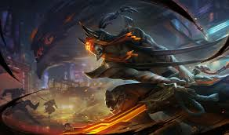

Através da antiga arte marcial do Wuju, Master Yi temperou seu corpo e afiou sua mente até o momento em que o pensamento e a ação se tornaram um. Embora ele escolha usar a violência como último recurso, a graça e velocidade com a qual ele empunha sua espada assegura que a resolução seja sempre ágil. Sendo ele o último praticante vivo do Wuju, Master Yi dedicou sua vida a encontrar discípulos capazes de carregar este legado de seu povo perdido.
Mesmo antes de Yi se tornar mestre em Wuju, ele era considerado um dos mais habilidosos praticantes desta arte marcial mística. Ele em breve provaria sua maestria quando notícias de uma invasão noxiana massiva alcançou seu vilarejo remoto. Yi varreu os campos de batalha de Ionia, virando a mesa da vasta infantaria de Noxus com ataques decisivos e ágeis, para o vexame do Alto Comando Noxiano. Reconhecendo a ameaça que os discípulos do Wuju apresentavam à sua invasão, os noxianos decidiram por desferir um devastador ataque químico no lar da arte mortal. Aqueles que de alguma forma sobreviveram à mistura venenosa tiveram suas mentes distorcidas sem chance de cura. Do lar de Yi, sobraram somente ruínas.
Como um dos últimos praticantes da arte ioniana do Wuju, Yi dedicou sua vida a preservar o legado de seu povo, avaliando potenciais discípulos com as Sete Lentes da Perspicácia para identificar qual deles era o mais digno.
A raiva dos jogadores pelo Espadachim Wuju é justificada pelo Ataque Alpha (Q) do campeão, o qual permite que ele se torne inalvejável brevemente. Por fim, a ultimate do herói, Highlander, o torna imune a efeitos de lentidão e aumenta sua velocidade de ataque e movimento.
